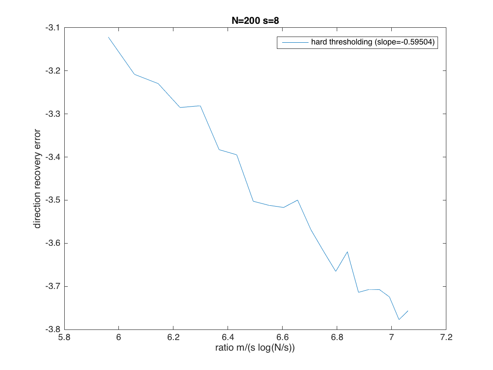

Contents
%%%%%%%%%%%%%%%%%%%%%%%%%%%%%%%%%%%%%%%%%%%%%%%% % Computational illustration for Chapter 17 % Sparse Recovery from One-Bit Observations %%%%%%%%%%%%%%%%%%%%%%%%%%%%%%%%%%%%%%%%%%%%%%%% clear all; clc; % CVX is needed to run this file % comment out the next line if MOSEK is not installed cvx_solver mosek
generate a sparse vector and its one-bit observation vector
select problem sizes
N = 200; s = 8; m = 20000; % create the sparse vector x to be recovered x = zeros(N,1); supp = sort(randperm(N,s)); x(supp) = randn(s,1); % produce the observation vector y A = sqrt(pi/2)/m*randn(m,N); y = sign(A*x);
verify that the direction of x is well approximated by the outputs
of the hard thresholding and linear programming procedures
tic; x_ht = zeros(N,1); aux = A'*y; [~,idx] = sort(abs(aux),'descend'); x_ht(idx(1:s)) = aux(idx(1:s)); t_ht = toc; error_ht = norm(x/norm(x) - x_ht); sprintf(strcat('Hard thrsholding took', 32, num2str(t_ht),... 'sec to approximate the direction with L2-error of', 32, num2str(error_ht))) % tic; cvx_begin quiet variable x_lp(N) variable c(N) minimize sum(c) subject to sum(y.*(A*x_lp)) == 1; y.*(A*x_lp) >= 0; c + x_lp >= 0; c - x_lp >= 0; cvx_end t_lp = toc; error_lp = norm(x/norm(x) - x_lp); sprintf(strcat('Linear programming took', 32, num2str(t_lp),... 'sec to approximate the direction with L2-error of', 32, num2str(error_lp)))
ans = Hard thrsholding took 0.0022705sec to approximate the direction with L2-error of 0.050133 ans = Linear programming took 5.4127sec to approximate the direction with L2-error of 0.0064176
Behavior of the recovery error as a function of the ratio m/(s*log(N/s))
for hard thresholding only (linear programming would take too long) expected behavior: log(error) = c * log(ratio), with c=-1/2
N = 200; s = 8; n_tests = 100; m_min = 10000; m_max = 30000; m_inc = 1000; ratio = zeros(1,(m_max-m_min)/m_inc+1); error_ht = zeros(n_tests,(m_max-m_min)/m_inc+1); for t = 1:n_tests x = zeros(N,1); supp = sort(randperm(N,s)); x(supp) = randn(s,1); x = x/norm(x); for m = m_min:m_inc:m_max A = sqrt(pi/2)/m*randn(m,N); y = sign(A*x); x_ht = zeros(N,1); aux = A'*y; [~,idx] = sort(abs(aux),'descend'); x_ht(idx(1:s)) = aux(idx(1:s)); ratio((m-m_min)/m_inc+1) = log(m/s/log(N/s)); error_ht(t,(m-m_min)/m_inc+1) = norm(x-x_ht); end end % visualize the result aux = polyfit(ratio,log(mean(error_ht)),1); slope_ht = aux(1); figure(1) plot(ratio,log(mean(error_ht))) xlabel('ratio m/(s log(N/s))') ylabel('direction recovery error') legend(strcat('hard thresholding (slope=',num2str(slope_ht),')')) title(strcat('N=',num2str(N), 32, 's=',num2str(s)))
verify that the magnitude can be well approximated, too,
provided some thresholds are allowed in the binary observations
N = 200; s = 8; x = zeros(N,1); supp = sort(randperm(N,s)); x(supp) = randn(s,1); x = rand*x/norm(x); % m = 20000; A = sqrt(pi/2)/m*randn(m,N); theta = sqrt(pi/2)/m*randn(m,1); y = sign(A*x-theta); A_tilde = [A -theta]; % tic; x_tilde_ht = zeros(N+1,1); aux = A_tilde'*y; [~,idx] = sort(abs(aux),'descend'); x_tilde_ht(idx(1:s+1)) = aux(idx(1:s+1)); x_ht = x_tilde_ht(1:N)/x_tilde_ht(N+1); t_ht = toc; rel_error_ht = norm(x - x_ht)/norm(x); sprintf(strcat('Hard thrsholding took', 32, num2str(t_ht),... 'sec to fully approximate with a relative L2-error of', 32, num2str(rel_error_ht))) % tic; cvx_begin quiet variable x_tilde_lp(N+1) variable c(N+1) minimize sum(c) subject to sum(y.*(A_tilde*x_tilde_lp)) == 1; y.*(A_tilde*x_tilde_lp) >= 0; c + x_tilde_lp >= 0; c - x_tilde_lp >= 0; cvx_end x_lp = x_tilde_lp(1:N)/x_tilde_lp(N+1); t_lp = toc; rel_error_lp = norm(x - x_lp)/norm(x); sprintf(strcat('Linear programming took', 32, num2str(t_lp),... 'sec to fully approximate with a relative L2-error of', 32, num2str(rel_error_lp)))
ans = Hard thrsholding took 0.0028615sec to fully approximate with a relative L2-error of 0.12901 ans = Linear programming took 4.9841sec to fully approximate with a relative L2-error of 0.0059859